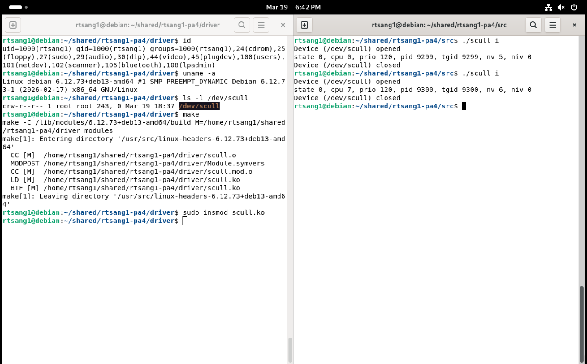
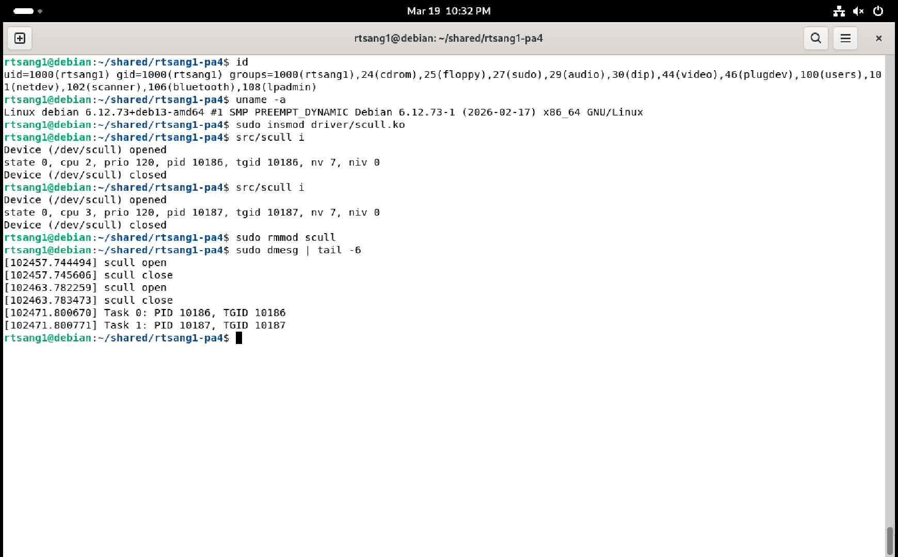
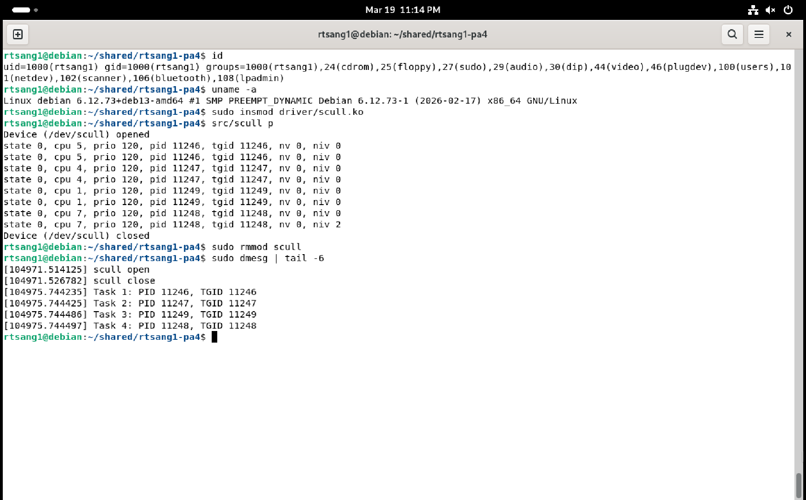
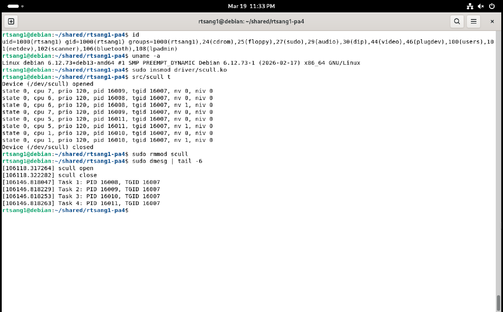

Homework 4
Due Date: Wednesday, 11/11/2026, 11:59 PM
Instructions
You may work together with other students on this assignment. You must list the names and
stevens.eduaddresses of anyone you work with. You are still responsible for submitting this assignment individuallyThe use of LLM-based tools on this assignment is allowed. You must document the model(s) used, (e.g. gpt5.6-sol) and how it was used (e.g. planning, coding, research on <topic>, spell-checking)
All external sources of code must be cited if used. Submitting work that is not your own without citation is plagiarism.
Your written submissions will be managed via Gradescope.
Introduction
The objective of this assignment is to extend a character device driver in Linux and get familiar with accessing Linux kernel data structures. Specifically, you will:
Extend a character device driver, implemented as a Linux kernel module, to implement a new IOCTL command in the driver. This new IOCTL command can be used to access a
task_struct(task control block) inside the Linux kernel.Extend a user space program to interact with the character device driver to test it.
Setup and Background
Ensure you have the
cs492-envset up.Download the
hw4-template.zipfile and extract it to a destination of your choice.Read the
hw4-excerpt.pdfto learn about character device drivers. You can also read the first 3 chapters of the Linux Device Drivers 3rd Edition book, available for free online.In the “scull” character device driver (inside the
driverdirectory) we have prepared several examples of IOCTL commands, which you can find in thescull_ioctlfunction of thescull.cfile.These commands are quickly explained in the
scull.hfile: they mostly read / write a single scull_quantum integer which is stored in the kernel memory of the device driver.To test these commands:
Modify
MODULE_AUTHORinscull.cto indicate your own student login name.Compile the scull driver code (it is implemented as a kernel module).
Load the scull module into the kernel.
Create the special character device file
/dev/scull.Compile the user-space test program (under
src).Test the various commands of the user-space test program to get a feel of what the commands do (help on currently supported commands can be seen by running:
./scull h). Also check what happens at the same time in the kernel log.Unload the module.
Part 1: Adding a New IOCTL Command
Implementation
Extend the “scull” character device driver (inside the driver directory) by adding support for a new SCULL_IOCIQUANTUM IOCTL command. Do NOT delete existing code and do NOT create new files. Only modify existing files to introduce your new functionality.
The new
SCULL_IOCIQUANTUMcommand (ifor “info”) that you must implement should return (copy) atask_infostructure (shown below) to the issuer of the IOCTL in user space.The struct should be populated with the corresponding fields coming from the kernel’s
task_struct(and thetask_struct’sthread_info) of the task corresponding to the issuer of the IOCTL, which can be accessed using thecurrentmacro in your IOCTL code in the driver. Note: you must define this structure as shown below.The
SCULL_IOCIQUANTUMcommand should be defined with 7 as its number (see thescull.hfile; make sure you read the whole file!) andstruct task_infoas the type of the data being transferred.struct task_info { unsigned int __state; // Task state (0 means running) unsigned int cpu; // CPU running this task (from thread_info) int prio; // Priority pid_t pid; // PID pid_t tgid; // TGID unsigned long nvcsw; // Number of voluntary context switches unsigned long nivcsw; // Number of involuntary context switches };
Look at the handling of the SCULL_IOCGQUANTUM command in the scull.h and scull.c files to see an example of copying information from kernel space to user space, except that this example only copies a single integer while your code must copy a complete task_info structure at once.
Testing
Extend the user-space test program (inside the src directory) to utilize your new IOCTL by adding the following command, triggered from the command line: ./scull i
The user space program should then print out the information received from the driver, all on one line. For example:
$ ./scull i
Device (/dev/scull) opened
state 0, cpu 3, prio 120, pid 4511, tgid 4511, nv 0, niv 0
Device (/dev/scull) closedDeliverable
Take a single screenshot showing two terminals in tmux side by side (Ctrl-B + %):
- One pane showing the output of
id,uname -a,ls -l /dev/scullcommands followed by commands to compile and load your module into the kernel. - One pane showing the result of two runs of the
./scull iuser-space test command.
This screenshot will eventually be added to your report.pdf.

Part 2: Adding Logging
Implementation
Extend the code of the scull device driver to log information about every Linux task (process or thread) that uses the new SCULL_IOCIQUANTUM command that you added above.
Create a linked list (not an array!) where each node of the linked list records the
pidandtgidof a task that uses your new command:You can design the data structure for list nodes as you wish. The requirement here is that each node in the list should keep at least the above mentioned
pidandtgidinformation.You can create your own functions to operate on the linked list or you can use built-in kernel functions to help you do that, it is up to you (see here for example, and the “Linked Lists” section in Chapter 11 of the Linux Device Driver 3rd Edition book reference documentation is available from the kernel.org web site as well as the c-pointers web site).
Make sure your linked list is properly initialized, either when you define the variable for the head of the list or when the device driver itself is initialized at module load time, depending on how you implement the linked list.
Whenever the new
SCULL_IOCIQUANTUMcommand is used by a task and, if the task is not already in the linked list (samepidand sametgid), create a new node recording thepidandtgidof the task and insert that new node at the end of the linked list.If the task is already in the linked list then it is not added again (so no duplicates in the list!)
When you need to create a new node, use the kernel’s
kmallocfunction to dynamically allocate memory for the new node (see here for example; look in particular at theGFP_KERNELflag).Your code must also properly test the result of
kmallocfor errors, in which case your code must print an error message in the kernel log withKERN_ERRpriority and not modify the linked list.Because multiple user tasks may use the new
SCULL_IOCIQUANTUMcommand concurrently, there may be multiple kernel operations happening on the linked list concurrently. Therefore your kernel code must use a mutex when your code operates on the linked list.To do this, use the Linux kernel version of a mutex, which is similar to the kind of mutex we studied in class (see here for an introduction; also search for the word “lock” on this web page to see examples). Make sure you properly unlock the list in all cases!
At the time that the module is unloaded from the kernel, your code must then:
Print the information from the linked list to the kernel log (with priority
KERN_INFO), like this:Task 1: PID XYZ, TGID XYZ Task 2: PID XYZ, TGID XYZ …Where XYZ is of course replaced with the real numbers from the linked list.
Remove each node from the list and deallocate it using
kfree(see here for example).
Deliverable
You must provide a single screenshot that shows a Debian terminal window that:
- shows the output of the
idcommand - followed by the module being loaded into the kernel
- followed by the
scull iuser-space test command being run twice in a row - followed by the module being unloaded from the kernel
- followed by the output of the
sudo dmesg | tail -6command, showing the last six lines of what your module printed to the kernel log.
Check that the PIDs / TGIDs shown in the kernel log when unloading the module match the PIDs / TGIDs printed by the two runs of the user-space scull i test program, and in the correct order, otherwise you will not get points!
For example:

Part 3: Testing with Processes
Extend the user-space test program (inside the src directory) to utilize the new IOCTL by adding the following command, triggered from the command line: ./scull p
When given the
pcommand (pfor “processes”), the user-space test program should create 4 child processes that each use yourSCULL_IOCIQUANTUMIOCTL twice before exiting.Make sure that all 4 processes run concurrently (i.e. the parent process must create all four of them before it starts to wait for each child process to terminate).
Also make sure that the
/dev/sculldevice file is opened and closed only once in the parent process, not opened and closed in each child separately.
Each process should print out the information received from the driver for each IOCTL done.
For example:
$ ./scull p
Device (/dev/scull) opened
state 0, cpu 1, prio 120, pid 3048, tgid 3048, nv 0, niv 0
state 0, cpu 1, prio 120, pid 3048, tgid 3048, nv 0, niv 2
state 0, cpu 2, prio 120, pid 3050, tgid 3050, nv 0, niv 0
state 0, cpu 3, prio 120, pid 3051, tgid 3051, nv 0, niv 0
state 0, cpu 3, prio 120, pid 3051, tgid 3051, nv 0, niv 0
state 0, cpu 0, prio 120, pid 3049, tgid 3049, nv 0, niv 0
state 0, cpu 2, prio 120, pid 3050, tgid 3050, nv 0, niv 2
state 0, cpu 2, prio 120, pid 3049, tgid 3049, nv 1, niv 3
Device (/dev/scull) closedNote how the printed PIDs are not always in increasing order, which shows that the processes are really running concurrently, not one after the other! Note also how the processes run on different CPUs (and even move between CPUs).
Deliverable
You must provide a single screenshot that shows a Debian terminal window that shows:
- the output of the
idcommand - followed by the module being loaded into the kernel
- followed by the
scull puser-space test command being run once - followed by the module being unloaded from the kernel
- followed by the output of the
sudo dmesg | tail -6command, showing the last six lines of what your module printed to the kernel log.
Check that the PIDs / TGIDs shown in the kernel log when unloading the module match the PIDs / TGIDs printed by the single run of the user-space scull p test program, otherwise you will not get points!
Each PID / TGID pair must also only appear once in the kernel log because duplicates are forbidden in the linked list kept by the character device driver’s code.
For example:

Part 4: Testing with Threads
Extend the user-space test program (inside the src directory) to utilize the new IOCTL by adding the following command, triggered from the command line: ./scull t
When given the
tcommand (tfor “threads”), the user-space test program should create 4 threads that each use yourSCULL_IOCIQUANTUMIOCTL twice before exiting.Make sure that all 4 threads run concurrently (i.e. the main thread must create all four of them before it starts to wait for each thread to terminate).
Also make sure that the
/dev/sculldevice file is opened and closed only once in the main thread, not opened and closed in each new thread separately.
Each thread should print out the information received from the driver for each IOCTL done.
For example:
$ ./scull t
Device (/dev/scull) opened
state 0, cpu 0, prio 120, pid 3620, tgid 3618, nv 0, niv 0
state 0, cpu 0, prio 120, pid 3620, tgid 3618, nv 0, niv 2
state 0, cpu 1, prio 120, pid 3621, tgid 3618, nv 0, niv 0
state 0, cpu 2, prio 120, pid 3622, tgid 3618, nv 0, niv 0
state 0, cpu 1, prio 120, pid 3622, tgid 3618, nv 1, niv 0
state 0, cpu 2, prio 120, pid 3619, tgid 3618, nv 0, niv 0
state 0, cpu 3, prio 120, pid 3619, tgid 3618, nv 1, niv 3
state 0, cpu 1, prio 120, pid 3621, tgid 3618, nv 0, niv 3
Device (/dev/scull) closedNote how the printed PIDs are not in increasing order, which shows that the threads are really running concurrently, not one after the other! Note also how all the threads have the same TGID but different PIDs. Finally, note how the threads run on different CPUs (and even move between CPUs).
Deliverable
You must provide a single screenshot that shows a Debian terminal window that:
- shows the output of the
idcommand - followed by the module being loaded into the kernel
- followed by the
scull tuser-space test command being run once - followed by the module being unloaded from the kernel
- followed by the output of the
sudo dmesg | tail -6command showing the last six lines of what your module printed to the kernel log.
Check that the PIDs / TGIDs shown in the kernel log when unloading the module match the PIDs / TGIDs printed by the single run of the user-space scull t test program, otherwise you will not get points!
Each PID / TGID pair must also only appear once in the kernel log because duplicates are forbidden in the linked list kept by the character device driver’s code.
For example:

Deliverables
For your submission, you will need to prepare a few files to upload on Gradescope:
- a zipfile containing your source code
- a written report named
report.pdf - a text file named
metadata.txt - an xz-compressed archive of all chatlog markdown files named
chatlogs.tar.xz
Source Code
You should use the provided top-level Makefile in the template archive to create a zipfile with your submission. It should generate a submission with the following structure:
Makefile
driver/Makefile
driver/scull.c
driver/scull.h
src/Makefile
src/scull.cDragging and dropping this archive file directly into the “Upload Files” box on Gradescope should automatically extract the zip file and upload its contents.
Written Report
Your report will have 2 parts, a demo section with your deliverable screenshots, and your answers to some reflection questions.
Metadata
Create a text file named metadata.txt that contains the following contents:
hw: <#>
name: <name>
email: <email>
collaborators:
- <name1> (<email1>)
- <name2> (<email2>)
- <...>
ai:
- <model>:
- <usage1>
- <usage2>
- <...>
- <...>
pledge: I pledge on my honor that I have abided by the Stevens Honor System.(replace <> items)
You must follow the format exactly.
AI Chat Logs
Follow this process for submitting AI chat logs:
Create a directory for your chatlogs named
chatlogs-hw4in your project root. Do not track this in git, as chatlogs can be massive.For each chat instance used, export the log as a markdown file (
/exportinopencode) using the following naming convention:hw<#>-task<#>-<model>-<yyyy>-<mm>-<dd>-<HHMM>.mdWhere:
hw<#>: homework numbertask<#>: homework task number you were working on<model>: LLM model version string<yyyy>-<mm>-<dd>-<HHMM>: approximate timestamp when chat was saved (HHMMis 24-hour time).
In the provided docker container, run:
cd chatlogs-hw4/ tar -cJvf chatlogs.tar.xz *.md
Submission
Upload all four files on Gradescope:
- source code zipfile
report.pdfmetadata.txtchatlogs.tar.xz
YOUR UPLOADS MUST PASS THE
file_checkAUTOGRADER TEST.